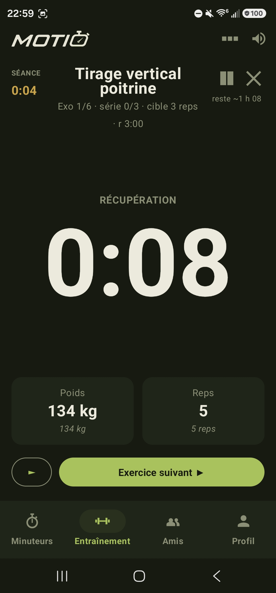
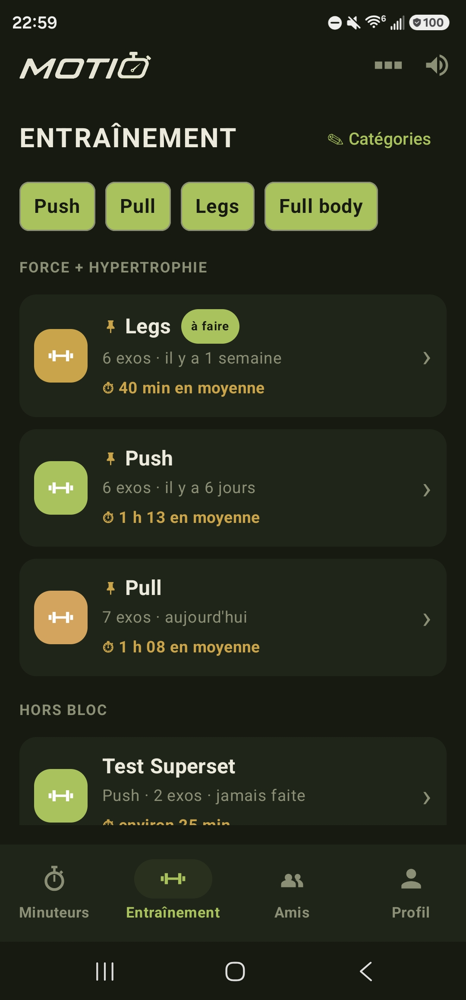
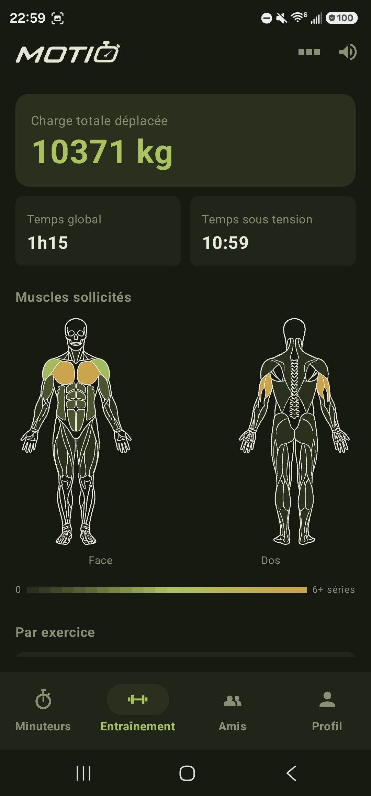
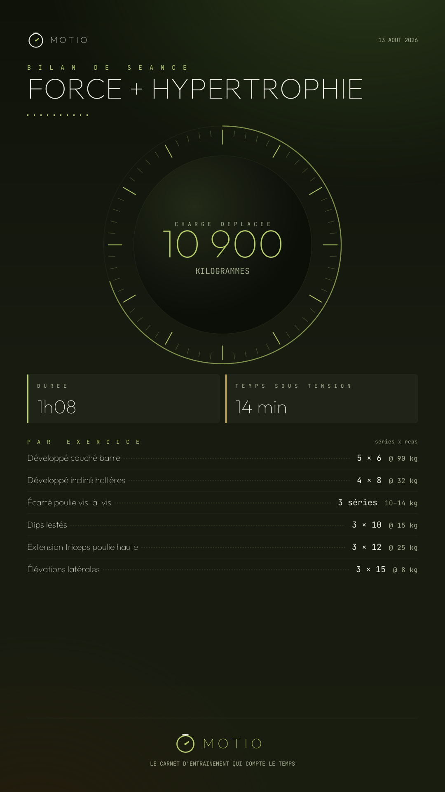
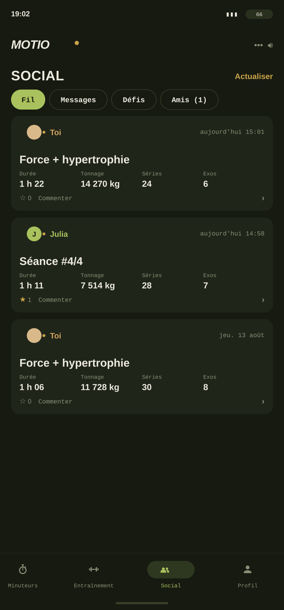

Séances
Construis une séance exercice par exercice depuis le catalogue : séries, répétitions, charges, temps de repos. Recherche plein texte et classement par groupe musculaire.
Application Android · chronomètre & carnet
Trois modes de chronométrage, un catalogue d'exercices complet, des programmes qui progressent tout seuls, un coach IA qui connaît vraiment tes séances, et un fil pour voir ce que font les copains. Sans compte obligatoire, sans publicité, hors ligne.
Android 8.0 minimum · dernière version sur GitHub · hors Play Store

Le chronomètre n'est pas un accessoire posé à côté du carnet : c'est par lui qu'on entre dans l'application. Essaie-le, il tourne vraiment.
Temps qui monte, tours enregistrés au passage. Pour les tests, les circuits libres et tout ce qui se mesure à la fin.
Tout ce que tu soulèves finit archivé, comparable, réutilisable. Rien à ressaisir, rien à exporter à la main.

Construis une séance exercice par exercice depuis le catalogue : séries, répétitions, charges, temps de repos. Recherche plein texte et classement par groupe musculaire.
Pendant l'effort, Motio affiche ce que tu avais fait la dernière fois sur le même exercice. Tu sais tout de suite si tu montes.
Chaque séance terminée est archivée avec ses performances réelles : charge déplacée, temps sous tension, muscles sollicités. Le résumé reste modifiable après coup.
Une séance s'envoie par lien ou par QR code, et le bilan se partage en carte illustrée. Le destinataire importe la séance telle quelle, sans compte et sans ressaisie.


Carte de bilan
À la fin d'une séance, Motio génère une carte lisible : charge déplacée, durée, temps sous tension, détail par exercice. Prête à envoyer, sans capture d'écran bricolée.
Tu donnes la fréquence, le matériel et l'objectif. Motio génère le découpage, répartit les groupes musculaires, fixe les charges de départ — puis fait monter les chiffres semaine après semaine.
Double progression · bloc de 8 semaines
Semaine 1 / 8
Un vrai chat, pas un formulaire à cocher. Moti connaît ton programme, tes dernières séances et tes records, et s'en sert vraiment pour te répondre, jamais des généralités.
Salut, moi c'est Moti. Je suis le coach qui vit dans Motio : je connais ton programme, tes dernières séances, tes records, ce que tu as déjà fait aujourd'hui. Demande-moi comment tu progresses, ce que tu dois faire, ou décris-moi une séance précise, je te la structure et tu l'ajoutes direct à ton entraînement. Je reste sur le sport, tout le temps.
Tu lui parles comme à un pote d'entraînement. Il calibre sa réponse sur ce que tu lui envoies : bref pour un bonjour, concret pour une vraie question.
Décris ton objectif en une phrase, par exemple « record 1RM au développé couché dans 8 semaines ». Moti construit un programme complet, semaine par semaine.
Demande-lui une séance précise : il la structure et te l'envoie directement dans l'onglet Entraînement, modifiable, à faire maintenant ou plus tard.
Le coach IA est inclus gratuitement pendant la phase de test. Une version Gold, plus poussée, arrivera plus tard.
Comparaison honnête, sans caricature : les autres applications font très bien beaucoup de choses. Motio fait ces choix-là.
| Motio | Apps de carnet grand public | Minuteurs simples | |
|---|---|---|---|
| Chrono, minuteur et Tabata intégrés | Les trois | Minuteur de repos | Les trois |
| Carnet complet et historique | Oui | Oui | Non |
| Programmes à progression automatique | Inclus | Souvent payant | Non |
| Coach IA personnel | Inclus | Rare, souvent payant | Non |
| Compte obligatoire | Non | Généralement oui | Non |
| Publicité et pistage | Aucun | Variable | Fréquents |
| Fonctionne hors ligne | Entièrement | Partiellement | Oui |
| Prix | Gratuit, sans abonnement | Abonnement mensuel | Gratuit avec pub |
| Distribution | APK direct, hors Play Store | Play Store | Play Store |
Tableau indicatif, établi sur les offres constatées à la date de publication.
Deux minutes, une autorisation à donner une seule fois. Ensuite l'application se met à jour toute seule.
Scanne depuis ton téléphone
dernière release GitHub
Pourquoi hors Play Store
Publier sur le Play Store impose une identité de développeur affichée, des frais, et un cadre qui pousse à la publicité et au suivi d'usage. Motio est distribué en direct pour éviter tout ça : aucune régie publicitaire, aucun traceur, aucun compte imposé.
Android 8.0 minimum (API 26) · dernière version sur GitHub
Le risque vient de la provenance du fichier, pas du format. Ici le fichier est publié sur le dépôt GitHub officiel de Motio, sous un compte public et vérifiable, et Android vérifie à chaque mise à jour que la signature correspond bien à celle de la version déjà installée.
Non. Le chronomètre, le carnet, les séances, les programmes et l'historique fonctionnent sans aucun compte. Un compte ne devient nécessaire que pour le volet social : suivre des amis et voir leur fil.
Sur ton téléphone. Rien ne part vers un serveur tant que tu n'utilises pas le volet social, qui ne synchronise que ce qui est nécessaire au fil. Le détail figure dans la politique de confidentialité.
L'application consulte le fichier de version publié sur GitHub et te propose la mise à jour quand une nouvelle version existe. Tu n'as pas à revenir sur ce site.
Pas aujourd'hui. Motio est une application Android. L'espace web permet en revanche de consulter son historique et son fil depuis n'importe quel navigateur, y compris sur iPhone.
Oui. Le signal sonore reste audible téléphone verrouillé et dans la poche, et chaque transition Tabata est annoncée. C'est la raison d'être du chronomètre : il doit tenir tout seul pendant que tu soulèves.
Oui, via l'export du carnet, et via le compte si tu utilises le volet social. Les séances individuelles se transfèrent aussi par lien ou QR code, importables telles quelles.
Oui, entièrement, sans abonnement, sans fonction verrouillée et sans publicité. Il n'y a pas de modèle payant caché derrière.
Les dernières versions publiées, lues en direct depuis GitHub.
Chargement des dernières versions…
Et les copains
Un fil minuscule, volontairement : les gens que tu suis, leurs séances, rien d'autre.
Fil de séances
Les séances terminées par les personnes que tu suis apparaissent avec leur durée et leur volume.
Abonnements
Tu choisis qui tu suis. Pas d'algorithme, pas de suggestions, pas d'inconnus.
Trophées
Six familles, trois paliers chacune. Régularité, volume, ancienneté : ce qui se mérite sur la durée.
Depuis l'ordinateur
L'espace web donne accès au même historique et au même fil, sur grand écran.
Ouvrir l'espace web →